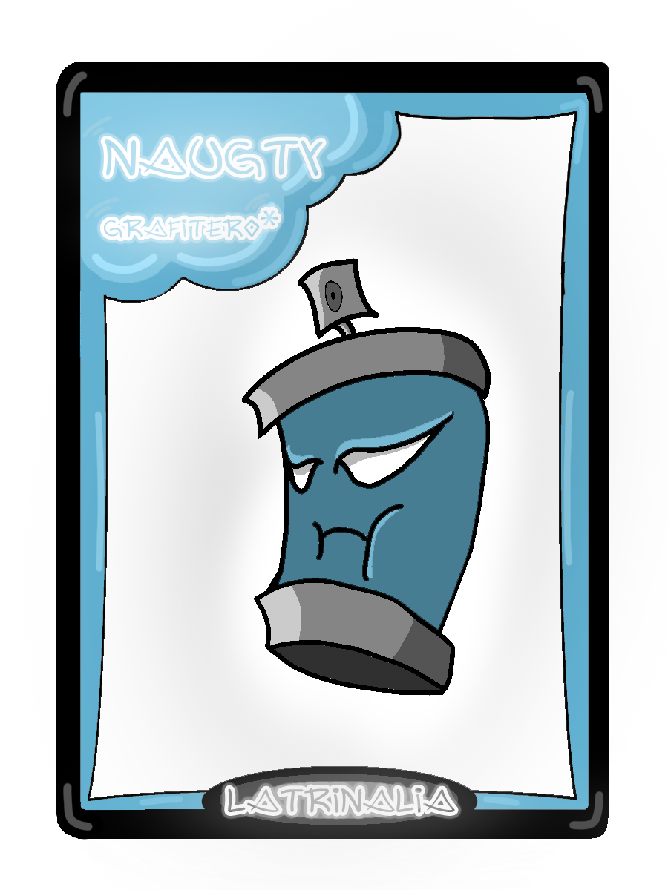

Reglas y gameplay
Hay cinco cartas diferentes en la baraja, cada uno con una característica diferente:
Abuelo/a: permanece con los ojos cerrados toda la noche.
Grafitero/a: encargado de pintar en la calle cosas obscenas e hirientes por todas las calles.
Niño/a: puede abrir los ojos mientras es de noche y los grafiteros pintan.
Policía: cuando es de día se encarga de interrogar a cada uno de los integrantes que estén jugando. Una vez acaba, decidirá quién es el sospechoso.
Pintor/a: puede borrar, por ronda, uno de los grafitis hechos por los/el grafitero/s.

En la partida, el/los policía/s irán seleccionando a quien crean que es el grafitero. Si acierta, éste deja de jugar durante la partida restante; si falla, el juego continúa. La partida finalizará cuando los policías capturen a todos los grafiteros.
El número de jugadores mínimo es de 5 personas (una para cada personaje del juego) y el máximo 16 personas.
El funcionamiento de las partidas y los turnos estará regido por el propio juego. Será el encargado de repartir las cartas e irá mostrando en pantalla los turnos y las indicaciones necesarias para el transcurso de la partida. Según la carta que te toque, jugarás un rol u otro. Por ejemplo: si eres niño/a podrás ver todas las cartas del resto de los jugadores, pero si eres abuelo/a solo podrás ver la tuya.
El número de jugadores mínimo es de 5 personas (una para cada personaje del juego) y el máximo 16 personas.
El funcionamiento de las partidas y los turnos estará regido por el propio juego. Será el encargado de repartir las cartas e irá mostrando en pantalla los turnos y las indicaciones necesarias para el transcurso de la partida. Según la carta que te toque, jugarás un rol u otro. Por ejemplo: si eres niño/a podrás ver todas las cartas del resto de los jugadores, pero si eres abuelo/a solo podrás ver la tuya.

Además, los jugadores contarán con un chat de audio o de texto para las partidas por donde interrogarán a los demás. Este canal es abierto y todos los jugadores podrán escucharlo o leerlo.
Al caer la noche sonará un sonido y se indicará en pantalla. Es entonces cuando los grafiteros deciden por votación a quiénes grafitear. A su vez, cuando llega la mañana suena otro sonido y se indica en pantalla. Los pintores se enteran de quién ha sido grafiteado y deciden a quién salvar. Después de ello comienzan los interrogatorios, que durarán el tiempo que requieran los policías. Así, las partidas durarán más o menos en función de las preguntas que tengan y el número de jugadores que haya. Una vez terminan de interrogar eligen a quien acusar. Tras esto, se expulsa al jugador acusado si es grafitero y vuelve a caer la noche.
En cuanto al gameplay en sí, en todo momento se verá un tablero con las cartas de los jugadores en círculo, a los bordes del tablero. Las indicaciones de los turnos aparecerán en el centro de la pantalla, y el chat aparecerá en un lateral. Al hacer votaciones aparecerá un menú donde se seleccionará al jugador al que se vota.
Al caer la noche sonará un sonido y se indicará en pantalla. Es entonces cuando los grafiteros deciden por votación a quiénes grafitear. A su vez, cuando llega la mañana suena otro sonido y se indica en pantalla. Los pintores se enteran de quién ha sido grafiteado y deciden a quién salvar. Después de ello comienzan los interrogatorios, que durarán el tiempo que requieran los policías. Así, las partidas durarán más o menos en función de las preguntas que tengan y el número de jugadores que haya. Una vez terminan de interrogar eligen a quien acusar. Tras esto, se expulsa al jugador acusado si es grafitero y vuelve a caer la noche.
En cuanto al gameplay en sí, en todo momento se verá un tablero con las cartas de los jugadores en círculo, a los bordes del tablero. Las indicaciones de los turnos aparecerán en el centro de la pantalla, y el chat aparecerá en un lateral. Al hacer votaciones aparecerá un menú donde se seleccionará al jugador al que se vota.